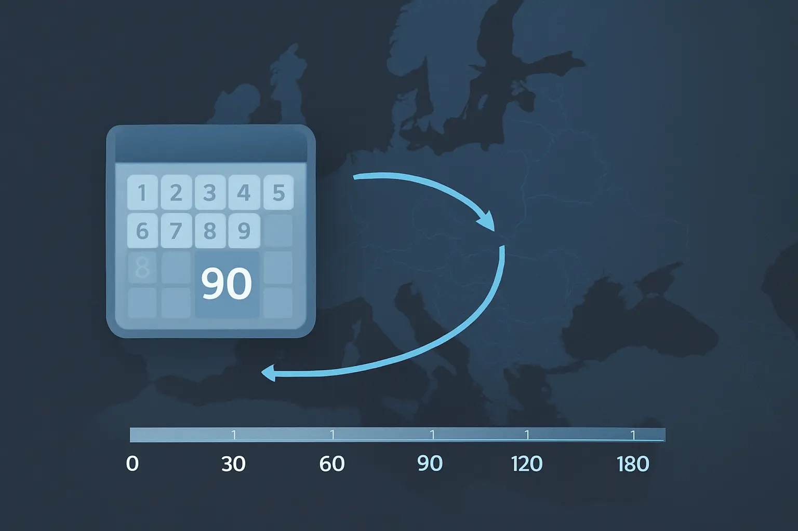

When Do You Get Schengen Days Back After a 90-Day Stay?
A focused explainer on when Schengen days become available again after a long stay.
Last verified: March 2026
What This Page Explains
This page explains the return of availability under the Schengen 90/180 rule: when days start coming back, why they come back gradually, and why “I waited 90 days” is not the right mental shortcut.
- when a previously used Schengen day stops counting
- why a full 90-day reset usually does not happen all at once
- how a long stay differs from multiple shorter trips
- what question you should actually ask before planning re-entry
Short Answer
You get Schengen days back one by one as older days fall outside the 180-day lookback window. The system does not normally give you a fresh new block of 90 days on one reset date.
The real question is not “how long have I been out?” It is “how many of my old Schengen days are still inside the last 180 days on the date I want to enter?”

What Happens After a Full 90-Day Stay
Imagine you spent 90 consecutive days in Schengen from 1 January to 30 March. On the day you leave, your allowance is exhausted because the full 90-day block is still inside the lookback.
That does not mean the entire block disappears after one waiting period. Instead, the earliest day of that trip drops out first, then the next one, then the next one after that.
| Check date | What changed in the lookback | Approximate days available |
|---|---|---|
| While all 90 days are still inside the last 180 days | No earlier trip day has dropped out yet. | 0 |
| When the earliest day becomes older than 180 days | The first day of that long stay stops counting. | 1 |
| The next day | The second day of that long stay stops counting. | 2 |
| After the whole old stay has rolled out | The entire block has fallen outside the lookback. | Up to 90 |
Why Multiple Trips Feel Less Obvious
If your Schengen presence came from several shorter trips rather than one long stay, days still come back one by one — but in a pattern that follows the actual order of those trips. That is why people often misjudge their availability after a year with many entries.
In that situation, the right method is not a rough waiting rule. It is a date-by-date lookback against the real chronology.
Safe mental model: a Schengen day becomes available again only when the corresponding old Schengen day is no longer inside the current 180-day lookback.
What Usually Causes Miscounts
- Assuming 90 days out automatically restores 90 days in.
- Forgetting that entry and exit days both count.
- Checking the wrong date. The answer for next week can differ from the answer for today.
- Treating Schengen countries separately. They still share one pool under the short-stay rule.
Practical Caution and Official Boundary
This page explains the logic behind returned availability. It is not a substitute for official Schengen guidance. If the timing matters for a real trip, check the actual 180-day lookback against the date you plan to enter and use the European Commission’s short-stay calculator and Schengen area overview where needed.
When Manual Planning Starts to Break Down
Manual planning becomes unreliable when you are close to the limit, have multiple trips in the last six months, or are trying to plan future entry dates against a changing lookback. At that point the hard part is not the rule itself. It is keeping the chronology accurate enough for the rule to be applied correctly.
How AtlasDays Helps
AtlasDays helps by keeping the chronology intact and showing remaining availability against the same rolling-window logic described here. It does not replace official Schengen instructions, but it does remove the need to reconstruct the same lookback repeatedly by hand. If you want the operational setup step inside the app, use Help: Trackers and Limits.
See when days become available again
AtlasDays keeps the rolling Schengen timeline in one place so returned days are easier to judge from a real record.
Join the waitlist